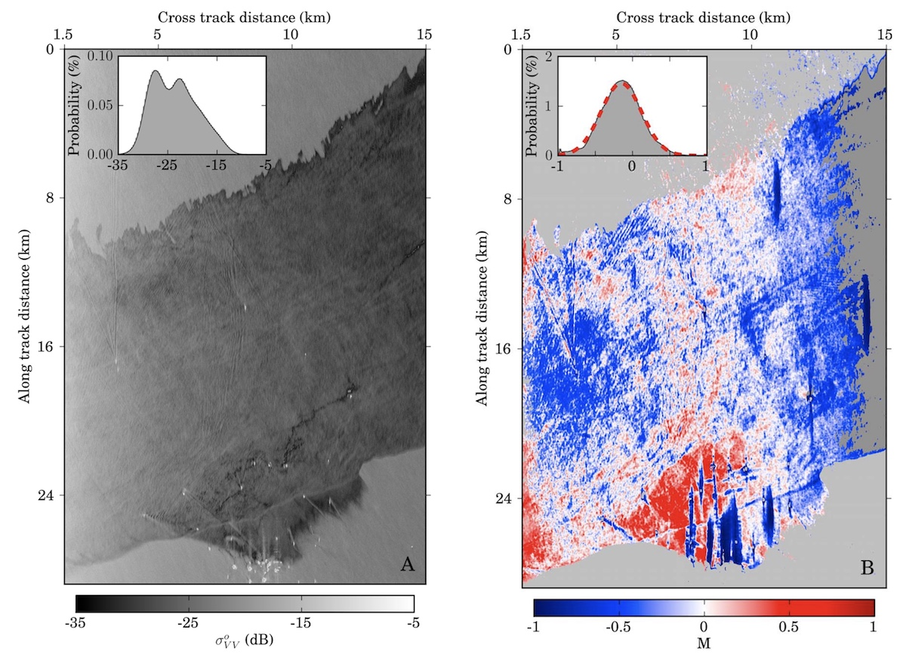

Hazard Response and Mitigation

We develop methods for applying remote sensing to environmental hazard response and mitigation, with emphasis on polarimetric synthetic aperture radar (PolSAR). Radar operates in all weather and lighting conditions, making it invaluable for rapid response. PolSAR data can locate oil on the sea surface, in bays, and along wetland coasts, and can characterize the properties of spilled oil. These same techniques can be adapted to locate wildfire perimeters under certain conditions. This work makes direct societal contributions and sharpens our broader remote sensing capabilities.
Relevant Publications
* graduate students, ** undergraduates, ☆ postdocs and research scientists.
-
Angelliaume, S., Dubois-Fernandez, P., Jones, C. E., Holt, B., Minchew, B. M., Amri, E., and Miegebielle, V.. “SAR imagery for detecting sea surface slicks: Performance assessment of polarimetric parameters.”
IEEE Transactions on Geoscience and Remote Sensing, 56(8), 4237–4257, 2018.
-
Angelliaume, S., Minchew, B. M., Chatiang, S., Martineau, P., and Miegebielle, V.. “Multifrequency radar imagery and characterization of hazardous and noxious substances at sea.”
IEEE Transactions on Geoscience and Remote Sensing, 55(5), 2017.
-
Collins, M. J., Denbina, M., Minchew, B. M., Jones, C.E., and Holt, B.. “On the use of simulated airborne compact polarimetric SAR for characterizing oil-water mixing of the Deepwater Horizon oil spill.”
IEEE Journal of Selected Topics in Applied Earth Observations and Remote Sensing, 8(3), 1062-1077, 2015.
-
Minchew, B. M., Jones, C.E., and Holt, B.. “Polarimetric analysis of backscatter from the Deepwater Horizon oil spill using L-band synthetic aperture radar.”
IEEE Transactions on Geoscience and Remote Sensing, 50(10), 3812 -3830, 2012.
-
Minchew, B. M.. “Determining the mixing of oil and seawater using polarimetric synthetic aperture radar.”
Geophysical Research Letters, 39(16), 2012.
-
Jones, C. E., Minchew, B. M., Holt, B., and Hensley, S.. “Studies of the Deepwater Horizon Oil Spill with the UAVSAR radar.”
, 195, 33–50, 2011.
← Back to Research Overview